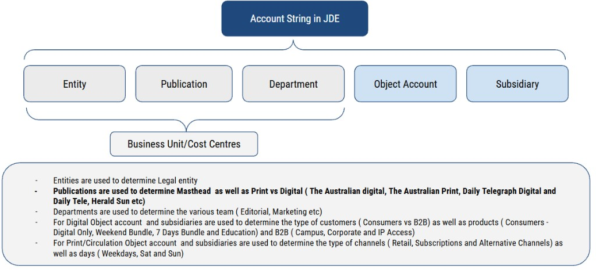
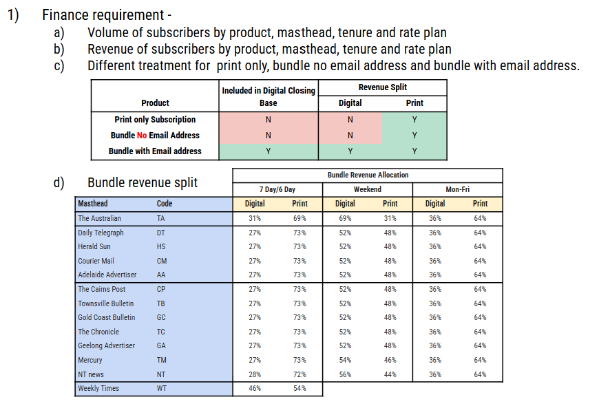

In one sentence
Each run works out how much of the cash collected is earned up to a chosen date, then posts only the part that earlier runs have not already posted.
When the job runs every week, that remainder is last week's earned revenue. The cash it looks at is not limited to last week. Payments are included from a long-standing start date (the script's commented value is 30 June 2014) up to the earned date. "Last week" is produced by subtracting what was posted before.
The path of one weekly run
The script contains eight procedures. Names start at 2b, so an earlier step must already have inserted a row in news_earned_revenue for this earned date. Nothing in the script writes the file. The order below follows the procedure numbers and the comments inside them.
- PAYG Contract Work out earned-to-date. PAYG spreads positive cash evenly across the subscription's start and expire dates. A contract earns each instalment from its due date.
- Cap at cash collected. If earned-to-date is higher than net cash (payments minus refunds, still ex-GST), cut it down to net cash. Earned revenue does not get ahead of cash.
- Subtract what was already posted. This week's number = earned-to-date − the sum of earlier earned dates for the same order line and product code.
- Send the total by product code. The file has one row per 4-character product code: date, code, amount. JDE uses that code against the chart of accounts.
-
Drop anything fully earned from the worklist
news_currently_earning, once lifetime earned equals lifetime net cash.
Two kinds of subscription
The split is on the offering, not on a flag in the calculation itself.
No contract on the offering
news_offering.contract_offer is empty, and the offering is Active. Procedures 2b, 3, 4, 5.
Think of a term that was paid up front, or as you go, without an instalment contract.
Offering is a contract
contract_offer is set, and the offering is Active. Procedures 2c, 3c, 4c, 5c.
Each payment belongs to an instalment with its own due date.
Only Active offerings are included. A subscription whose package is no longer Active is skipped by these updates.
PAYG — spread cash across the term
Take the positive payments only (refunds wait for the cap). Spread that ex-GST total evenly from the subscription start date through the expire date. Both ends count as a day.
Days so far = earned date − start date + 1. Days in the term = expire date − start date + 1. After the expire date the fraction can go above 100%. The cap then pulls it back to the cash collected.
Illustration — not a live subscriber
Term 1 October through 7 October. That is 7 days. The customer paid 100 ex-GST. There is no refund yet.
| Earned date | Days so far | Earned to date | Already posted | This run posts |
|---|---|---|---|---|
| 2 October | 2 | round(100 × 2/7) = 29 | 0 | 29 |
| 3 October | 3 | round(100 × 3/7) = 43 | 29 | 14 |
| 7 October | 7 | 100 | prior sum | whatever is left to reach 100 |
The weekly number is the new cumulative minus the old cumulative. Rounding is done on the cumulative each time, so the pieces add back to the cash.
A refund
Suppose 100 was paid and 30 was refunded. Net cash is 70. At the end of the term the straight-line of the original 100 is still 100, and the cap cuts earned-to-date to 70. If earlier weeks already posted 90, this week posts 70 − 90 = −20. PAYG is allowed to post that negative. That is a reversal.
Contract — earn each instalment from its due date
Each positive payment is earned on its own, starting on the instalment due date.
- If the due date is still in the future, this instalment contributes 0.
- If days earned have reached the instalment length, the whole ex-GST payment is earned.
- Otherwise the payment contributes days earned ÷ instalment length.
Add the instalments together, then round once.
The due date comes from the contract instalment tied to that payment. If that row is missing, the job uses the latest instalment that has any payment. If that is also missing, it uses the subscription start date.
How long is an instalment?
The package calendar unit comes from Think: 0 = days, 1 = weeks, 2 = months, 3 = years.
| Package | Instalment length used |
|---|---|
| Monthly, or a year billed in 12 instalments | Number of days in the month of the due date (28, 29, 30, or 31). |
| Days or weeks | Package length in days, divided by the number of instalments. |
| Other month or year lengths | Length measured from the day the job runs, divided by the number of instalments. It uses today's date, not the subscriber's own month. |
Illustration
An instalment of 31 ex-GST is due on 1 October, and October has 31 days. On 1 October, one day is earned: round(31 × 1/31) = 1, if it were the only instalment. On 31 October the whole 31 is earned. On 30 September nothing from this instalment is earned yet.
When the product code changes
Contracts keep a map from the current product code to the previous one (news_earned_revenue_pac_mapping). Cash and earlier earnings on the old code are pulled into the new code. The old-code row is skipped when the new code already has a payment, so the same cash is not earned twice.
The file JDE receives
The sample is named PCEarnRevWk_ plus a timestamp. Shape:
Every data row in that sample is earned date 25 October 2026, a Sunday. The file timestamp is Monday 26 October 2026 at 06:00:00.240. That is one file, so it shows the pattern rather than proving the standing schedule. Some amounts in the sample are negative, which matches the PAYG reversal path. The file has no subscriber id, order id, tenure, or rate plan.
The 4-character code is the JDE product code
Codes such as ANAD and CMCW are product codes. They are mapped to the JDE account string. The weekly procedures do not build that account string. They total the week's movement by the product code and stop there.
The account string has five segments. The first three are the business unit / cost centre.
| Segment | What it decides |
|---|---|
| Entity | Legal entity |
| Publication | Masthead, and print versus digital (for example The Australian digital, The Australian print, Daily Telegraph, Herald Sun) |
| Department | Team, such as editorial or marketing |
| Object account and subsidiary — digital | Consumer versus B2B, and the product: digital only, weekend bundle, 7-day bundle, education, campus, corporate, IP access |
| Object account and subsidiary — print | Channel (retail, subscriptions, alternative) and days (weekday, Saturday, Sunday) |

The table that turns CMCW into those five segments was not in the procedures, the sample file, or the Think data model.
The print / digital split is not inside this script
Finance attributes bundle revenue to digital and print by masthead and by how the paper is delivered. Print-only subscriptions, and bundles with no email address, are 100% print and sit outside the digital closing base. A bundle that has an email address is split, and it does sit in the digital closing base.
| Masthead | Code | 7 day / 6 day digital | Weekend digital | Mon–Fri digital | |||
|---|---|---|---|---|---|---|---|
| The Australian | TA | 31% | 69% | 69% | 31% | 36% | 64% |
| Daily Telegraph | DT | 27% | 73% | 52% | 48% | 36% | 64% |
| Herald Sun | HS | 27% | 73% | 52% | 48% | 36% | 64% |
| Courier Mail | CM | 27% | 73% | 52% | 48% | 36% | 64% |
| Adelaide Advertiser | AA | 27% | 73% | 52% | 48% | 36% | 64% |
| The Cairns Post | CP | 27% | 73% | 52% | 48% | 36% | 64% |
| Townsville Bulletin | TB | 27% | 73% | 52% | 48% | 36% | 64% |
| Gold Coast Bulletin | GC | 27% | 73% | 52% | 48% | 36% | 64% |
| The Chronicle | TC | 27% | 73% | 52% | 48% | 36% | 64% |
| Geelong Advertiser | GA | 27% | 73% | 52% | 48% | 36% | 64% |
| Mercury | TM | 27% | 73% | 54% | 46% | 36% | 64% |
| NT News | NT | 28% | 72% | 56% | 44% | 36% | 64% |
| Weekly Times | WT | 46% | 54% | — | — | — | — |

One order line is allowed to have several product codes. If a bundle has already been split into a digital amount and a print amount, this job will earn each amount on its own and never see the percentage. That is the likely place the table is used. It is not proven: the procedures that would apply the percentage were not in the script. A comment mentions an allocation-percent table, and the Think package has a "manual percent / relative percent" option, and this job reads neither of them.
The codes on the finance sheet and the codes on the weekly file are not the same list. Herald Sun (HS), Daily Telegraph (DT), Courier Mail (CM) and most of the regional titles appear in both. The sheet calls The Australian TA and the Advertiser AA. The weekly file has prefixes AU and AN instead, and also CS, PU, RN, SC, and SN, which are not on the sheet. The two-letter suffix (AD, CW, DD, PT, and the others) is not defined in these sources.
What finance asked for, and what this file contains
| Finance requirement | In this weekly file? |
|---|---|
| Revenue by product | Yes, as one amount per product code. The code is expected to carry masthead and print/digital once it is mapped to JDE. |
| Volume of subscribers, tenure, rate plan | No. There is no subscriber count and no plan attribute. |
| Print-only versus bundle-with-email versus bundle-without-email | Not as its own column. Only if that choice was already baked into the product code or the amount. |
| The masthead percentage split | Not calculated here. |
Still missing from the script
- The step that inserts this week's
news_earned_revenuerows. - The step that sums by product code and writes
SOF/EOF. - The product-code to JDE account crosswalk.
- The program that applies the bundle percentages, if it is a program and not a package setup.